Palm Bay
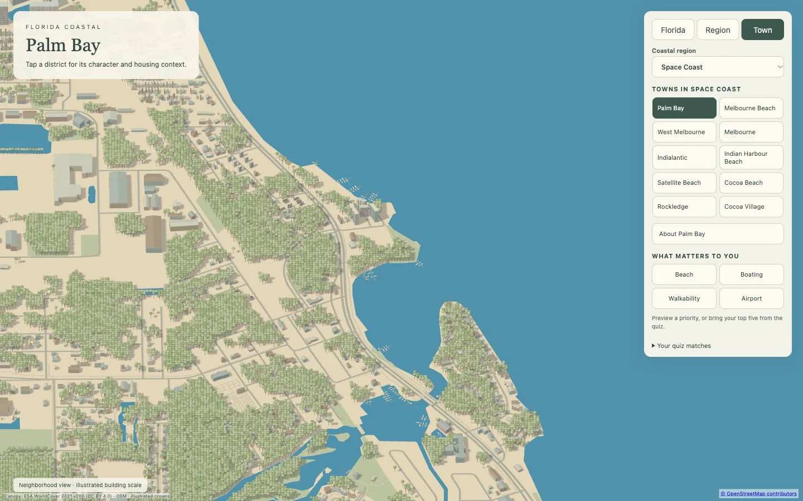
Real OSM footprints and coast; sourced land-cover canopy. Open region · Accuracy CSV · Price sources
Alignment is measured against input OSM, not an independent survey. Prices retain their source metric and period. Physical-phone load timing remains unverified.

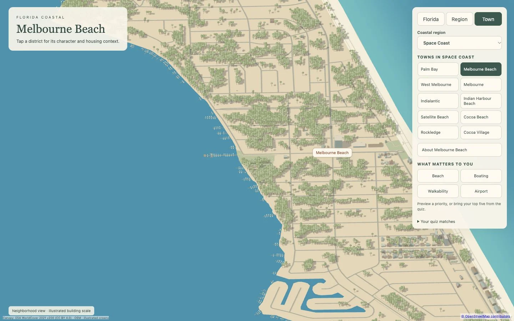
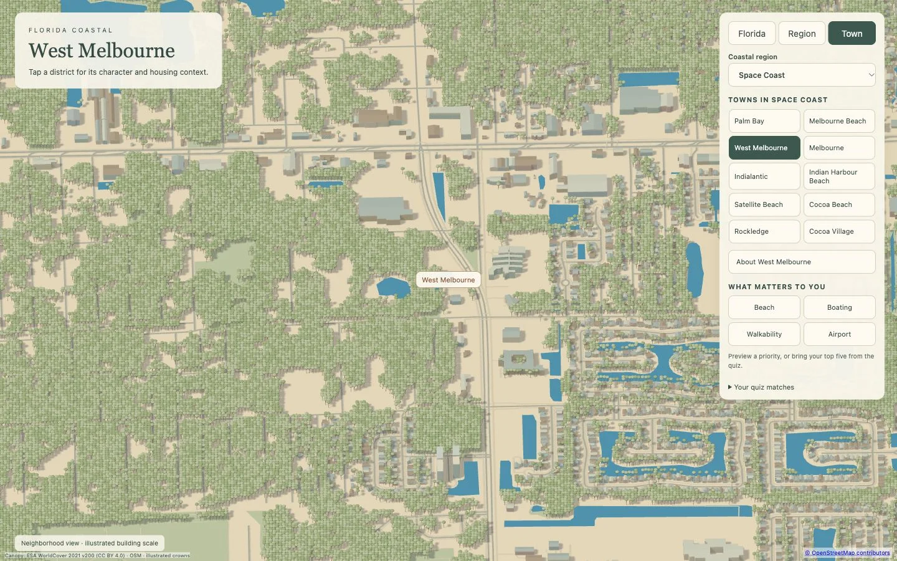
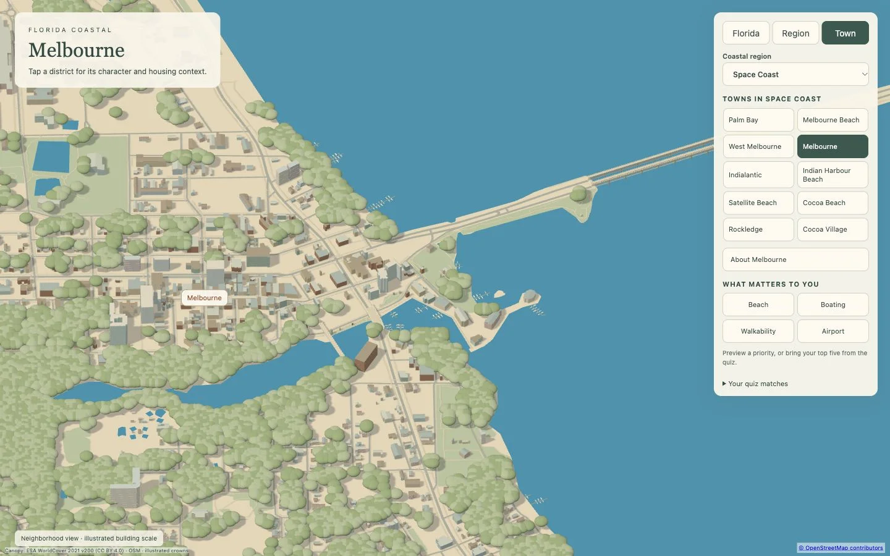
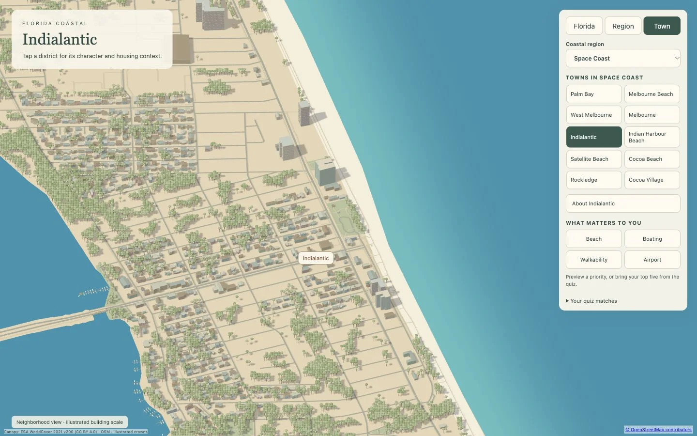
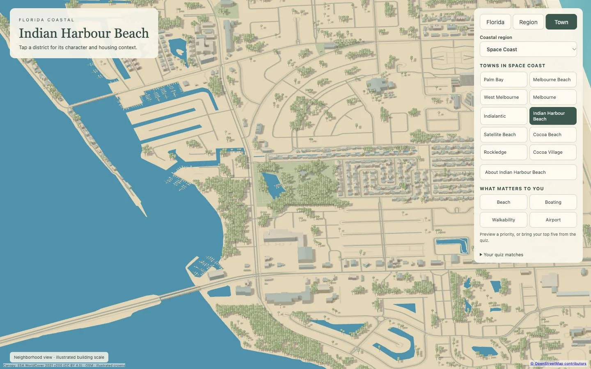
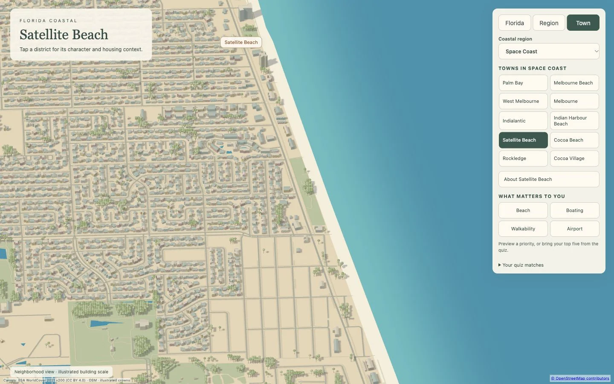
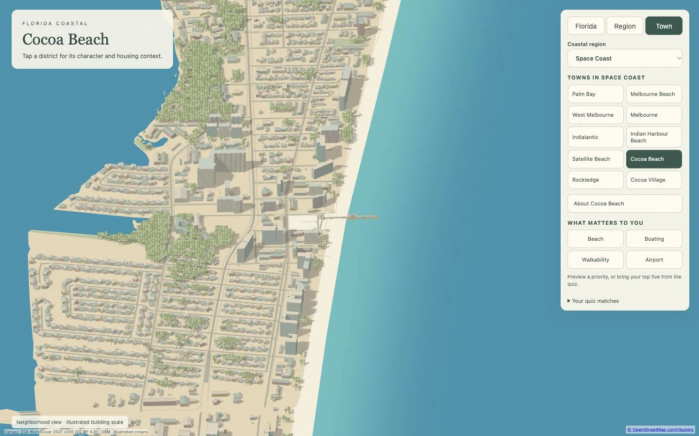
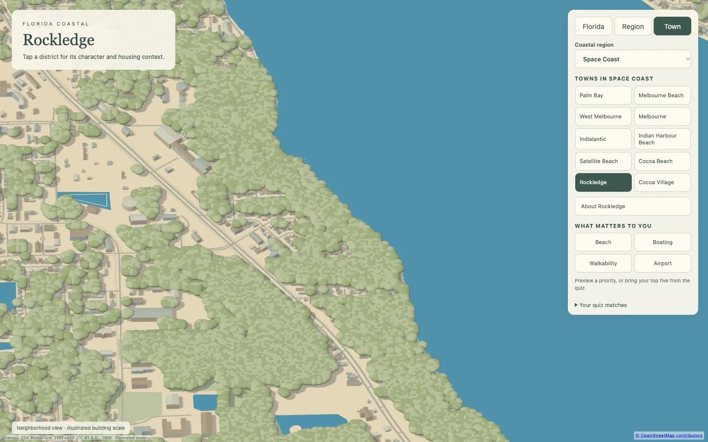
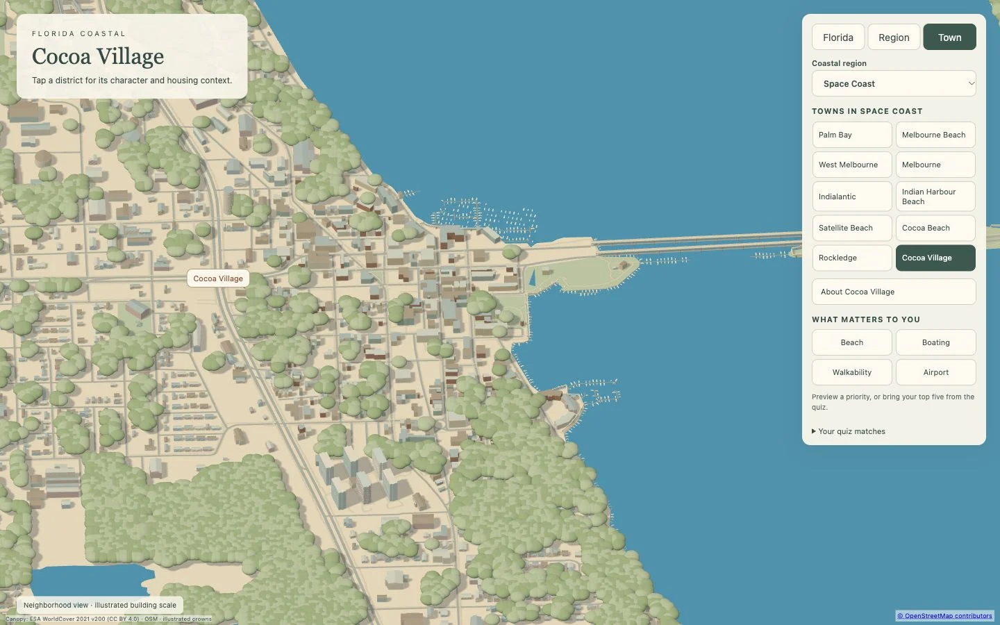
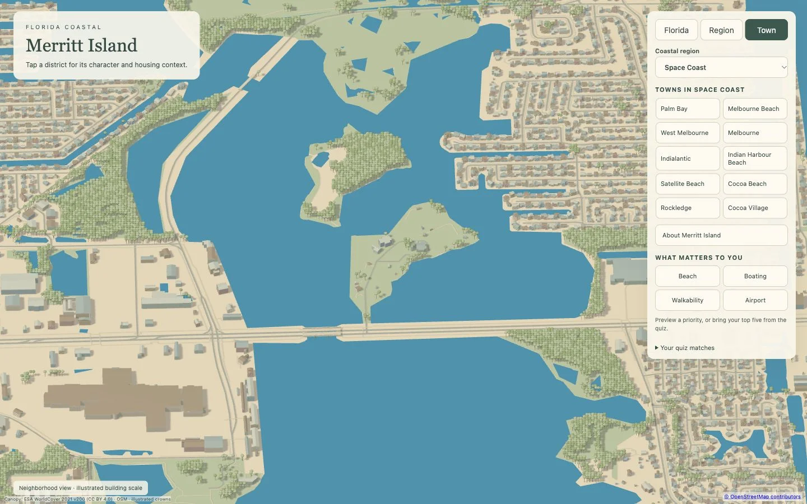
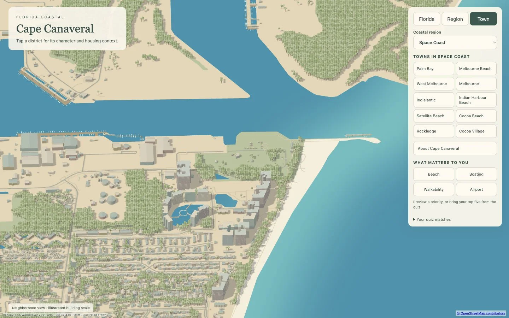
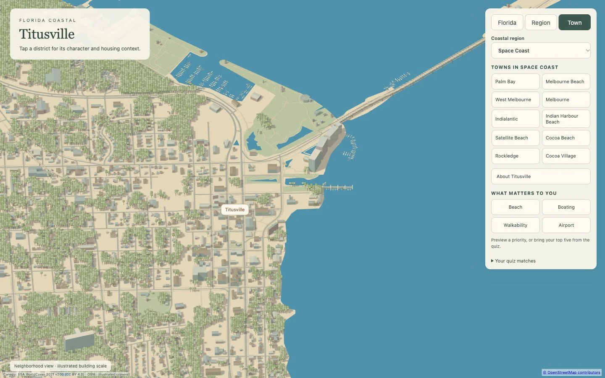